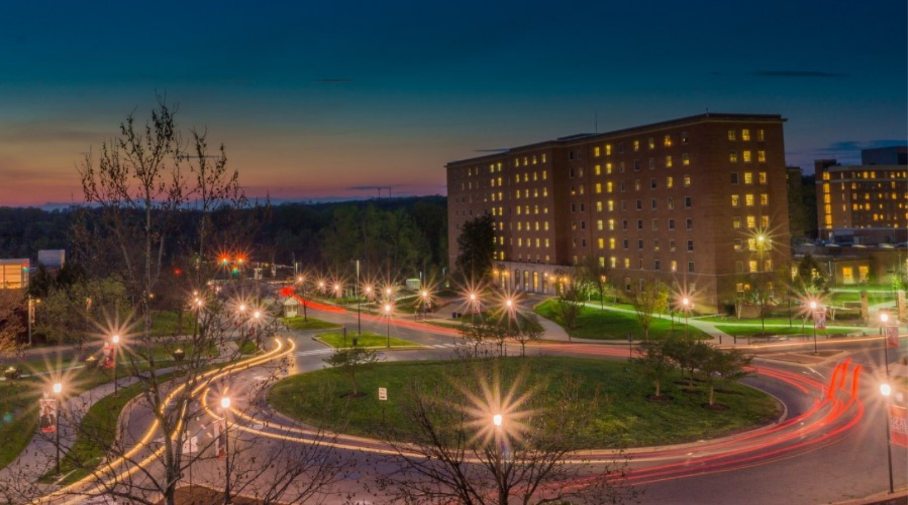
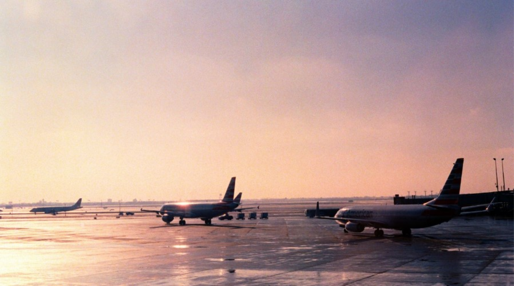
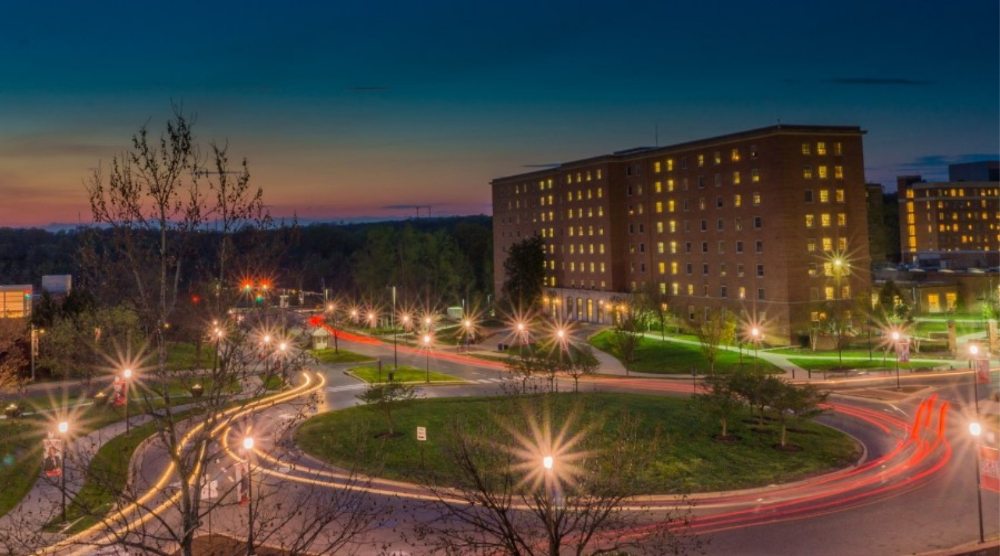
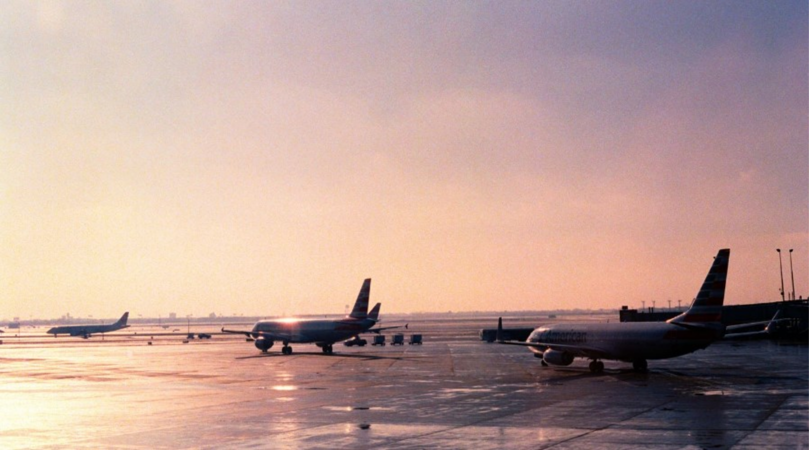

There are many ways to build the foundation - the important thing is it’s a strong one - the North Texas region is focused on
ensuring the needs of residents, businesses, schools and public sector are met to create a fast, safe and connected future.
Whether fiber, 5G, private LTE or fluid mesh, here are examples what’s happening across NTX.
North Texas Innovation Alliance Lead Partners
 



In partnership with the City of Dallas, students at the University of Texas at Dallas created a digital
twin of the P25 Public Safety Radio Network as apart of the UTDesign Capstone program. The
model helps the city maximize the efficiency of the network by showing relevant radio tower
locations and clearly illustrating a main and backup signal pathway propagation using
animations. This model will help emergency responders in the area communicate more
effectively. To learn more about the UTDesign Capstone program and how you can get involved,
contact Cynthia Heyn at (cynthia.heyn@utdallas.edu).
Lake Cities - Joint Broadband Proposal: Four communities across Denton County, Texas are trying
to bridge the digital divide for residents who live in the region. The cities of Corinth and Lake
Dallas, as well as the towns of Hickory Creek and Shady Shores put out a joint Request
for Proposal (RFP) in September 2021 for a public-private partnership to deploy a fiber network to
households and businesses in all four communities, collectively known as the Lake Cities. The
project, with the help of $4 million in American Rescue Plan funds, would include building a
middle mile fiber ring to support government services around the four cities, connecting public
buildings and facilities. The RFP seeks a financially sustainable public-private partnership where
the local governments of the four cities make the initial capital investment and jointly own the
network with a private Internet Service Provider. The ISP would operate and maintain the network
primarily with little to no additional government funding needed after the network is up and running.
Internet for All is a collaborative effort of 40+ leaders across the Dallas area, including those from
our local school districts, Dallas College, the City of Dallas, the City of Grand Prairie, Region 10,
faith-based organizations, Dallas County, and local funders and organizations. Co-led by Jack
Kelanic, Dallas Independent School District’s chief technology officer, and Dottie Smith, president
of The Commit Partnership, this group of volunteers has joined forces to solve the internet
connectivity challenge. Through the coalition's collaborative efforts, major strides and learnings
have been executed including full hotspot and wired internet access for all families, private LTE
network pilots in multiple school districts, joint broadband strategic plans and much more to come.
McKinney - District 121: Deployment of Fiber and Neutral Host 5G Services in mixed use innovation
district
Dallas - Smart Streetlight WiFi Networks: The City of Dallas, led by Resiliency and Public Works,
has stood up smart streetlight projects in 10 priority neighborhoods for WiFi access. Funding has been
allocated to greatly expand WiFi throughout City parks, and to expand digital equity efforts in the
coming year.
Dallas and Garland ISDs - Private LTE Networks: Taking a balanced approach between short-term
fixes and long-term solutions; both Dallas and Garland Independent School Districts have built
Private LTE networks to serve families in high-need areas of the city, utilizing a campus as a fixed
point for the network. The networks have varying footprints ranging from 2-8 miles in radius per
site.
The City of Dallas (City) and Dallas Independent School District (DISD) - Broadband & Digital
Equity Strategic Plan: This collaborative plan was commissioned in late 2020 as the Covid-19
pandemic highlighted and exacerbated students’ and residents’ need for broadband access.
Both DISD and the City have taken significant steps to address broadband- related gaps in the
City and DISD district, but barriers to equitable internet access and use remain in Dallas, just as
they do across the country. This project aimed to identify the magnitude of digital equity
challenges and broadband gaps, and to develop actionable strategies that could be undertaken
by the City and the DISD to help Dallas residents, including student households, to access
affordable, high-speed home broadband service—and possess the devices and skills necessary
to make fullest use of broadband. This Plan represents a vision for achieving digital equity and
strategic alignment among community partners. It contains four broad based recommendations
with initiatives associated with each of the recommendations.
The City of Arlington will have full Gig connectivity to every home and business in the city through
a P3 with SiFi Networks. SiFi Networks under its FiberCity® brand funds, builds and operates city
wide, open access, 100% fiber networks across the US. The state of the art networks enables
service providers to deliver dozens of internet and next generation applications to residents and
businesses not only offering them more choice and better customer service but faster more
reliable internet. A FiberCity® network is about more than just a gig of internet, it can drive
economic development, close the digital divide and provide a city with Smart City connectivity,
laying the foundations for cities to thrive for generations to come.